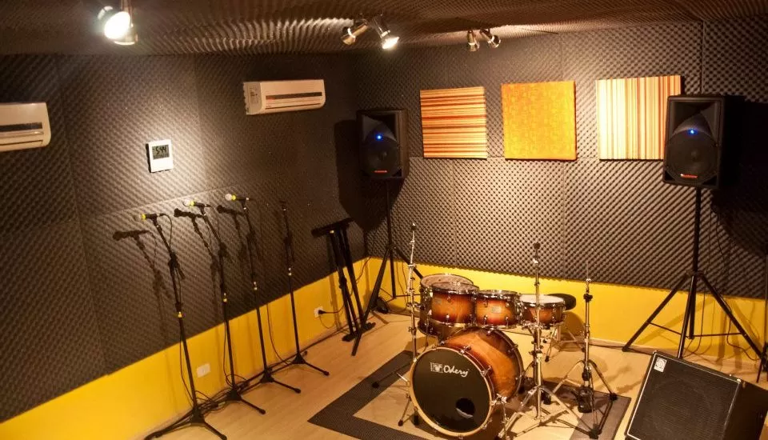
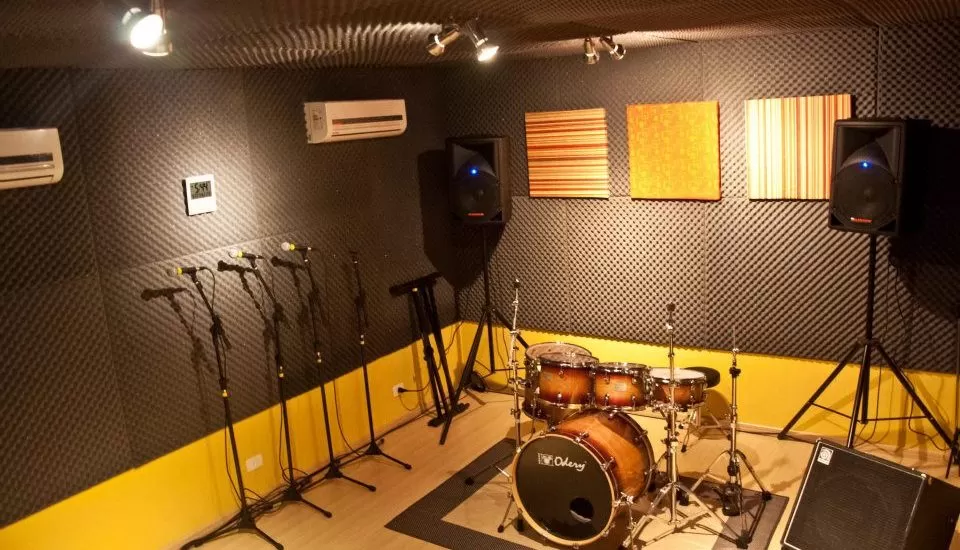

Nossas Tecnologias No Campo
A aplicação de drones na agricultura está transformando a maneira como as fazendas são gerenciadas. Esses veículos aéreos não tripulados são utilizados para pulverização de culturas, mapeamento de terrenos e monitoramento de pragas, oferecendo uma visão detalhada e rápida que antes era difícil de alcançar manualmente. Isso não só reduz os custos operacionais, mas também minimiza o impacto ambiental, ao mesmo tempo em que maximiza o rendimento das colheitas.

 
